Telescopios
Una recopilación de mis viajes de observación con datos divertidos, consejos y enlaces útiles.
Telescopios Espaciales
La atmósfera de la Tierra es un poco ruidosa y a veces dificulta la obtención de datos con telescopios terrestres. Así que vamos al Espacio! Sin la atmósfera, la resolución es mucho mejor y obtenemos mejor ciencia e imágenes increíbles. Podemos descubrir y estudiar fuentes a alto redshift con mejor detalle.
{kind=link}
El Telescopio Espacial James Webb
JWST va a revolucionar nuestra vista del Universo. Construido especialmente para estudiar el Universo temprano, el telescopio observará en el infrarrojo con una resolución increíble. Yo co-lideré una propuesta con la Dr. Micaela Bagley para confirmar unas galaxias a z ~ 9 y medir su poder de ionización. ¡Qué emoción!
Últimos tests en Tierra del JWST antes de su exitoso lanzamiento en Diciembre.
Crédito: NASA/Chris Gunn.

Telescopios Ópticos Terrestres
Telescopios reflectores basados en espejos son más económicos y grandes que los refractores (lentes). Entre más grande es el diámetro del espejo, más objetos distantes se pueden observar. Los telescopios des 10-metros son ideales para estudiar la EdR ya que obtenemos más luz de las fuentes a alto redshift.
Telescopios de 10 metros en Mauna Kea, Hawaii: Keck I and II, Subaru y Gemini (N). Crédito: Keck Observatory

Radio Telescopios
La radioastronomía comenzó por accidente en 1932 cuando el ingeniero Karl Jansky investigaba fuentes naturales de inteferencia en telecomunicaciones. Construyó una antena y se topó con el agujero negro en el centro de nuestra galaxia. En radio, puedo estudiar el polvo frío y gas de las galaxias en alto-z.
Podemos observar durante el día! La emisión en radio del Sol no nos molesta a comparación de los telescopios ópticos.
Crédito:(ESO/NAOJ/NRAO)/W. Garnier (ALMA)

Observatorio W.M. Keck
Situado en La Gran Isla de Hawaii, el observatorio se enceuntra 4,000 msnm
sobre el volcán dormido de Mauna Kea. La altura y las condiciones climática hacen que este observatorio sea el lugar perfecto para
construir telescopios de 10 metros.
Propuestas de telescopios 2022A.
Observando con Steve y Rebecca. Abajo: Calibrando el espejo primario del Keck I y el espectro de una posible galaxia a alto-z usando MOSFIRE

El equipo de Texas observajndo con Keck: R. Larson, C. Papovich, T. Hutchison, S. Finkelstein y yo.

Los telescopios de 10 metros Keck I y Keck II. Crédito: Observatorio W.M. Keck

Sede de Observación del Observatorio W.M. donde dormimos de día y observamos de noche.
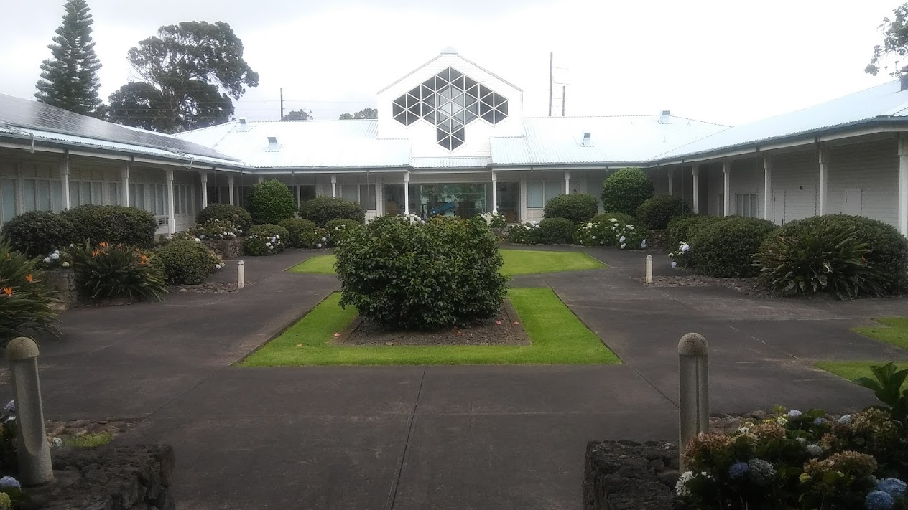{kind=link}
Los astrónomos no subimos hasta la cumbre, desde la sede de observación observamos con computadores que se comunican con el telescopio. Los operadores de telescopio están más familizarizados con los intrumentos y son quienes están junto al telescopio ayudándonos a observar durante la noche. No podríamos lograrlo sin ellos!
Centro de visitantes del W.M. Keck. Planea tu visita!
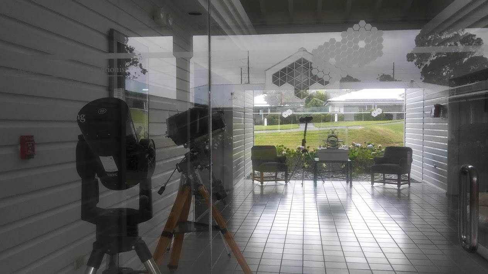{kind=link}
La naturaleza al rededor de la Gran Isla es espectacular. Me recordó mucho a Colombia!
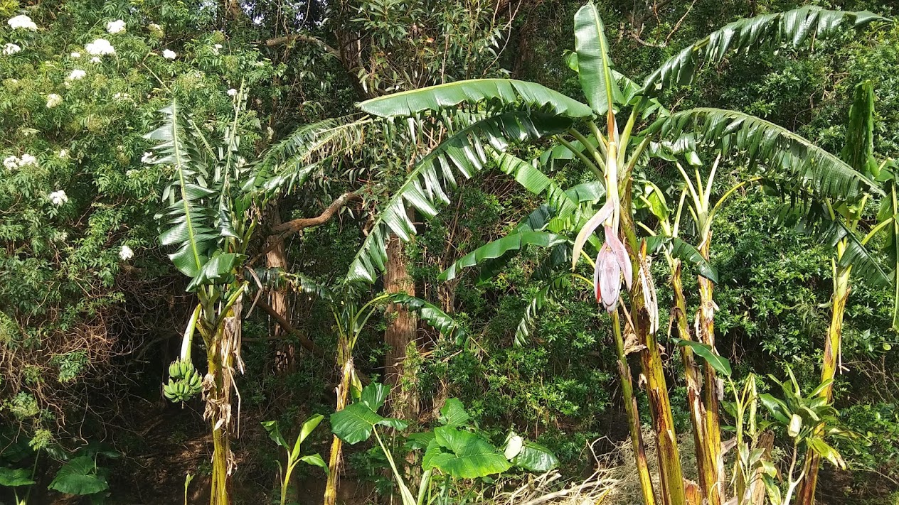{kind=link}
Visité Mauna Loa en el 2018, justo una semana antes de la erupción de Kilauea, el otro volcán activo de la isla.

Conociendo por primera vez el Océano Pacífico, a pesar de haber crecido en Colombia...

Observatorio La Silla
El Observatorio Europeo Austral (ESO en inglés) construyó su primer observatorio en el desierto chileno de Atacama ya que tiene excelentes condiciones nocturnas y atmosféricas, esenciales para las operaciones de telescopios ópticos. Cada telescopio tiene sus propias fechas de aplicación.
Izquierda: El telescopio MPG/ESO 2.2 m que utilicé por 14 noches seguidas. Centro (domo cuadrado): Telescopio de Nueva Technología NTT. Derecha: Telescopio de 3.6m/ESO, el más grande del observatorio.

Mantenimiento en la mañana del Telescopio MPG/ESO de 2.2 metros.

Hay tres instrumentos en este telescopio. Yo usé GROND para observar candidatos a cuásar en todas las bandas disponibles desde el espectro visual al infrarrojo-cercano para poder identificar el break fotométrico que indica la naturaleza del cuásar a alto redshift.

La estación de trabajo de los astrónomos desde donde controlo el telescopio. Toca estar pendiente de todas las pantallas para asegurarse que el telescopio y las observaciones estén bien.
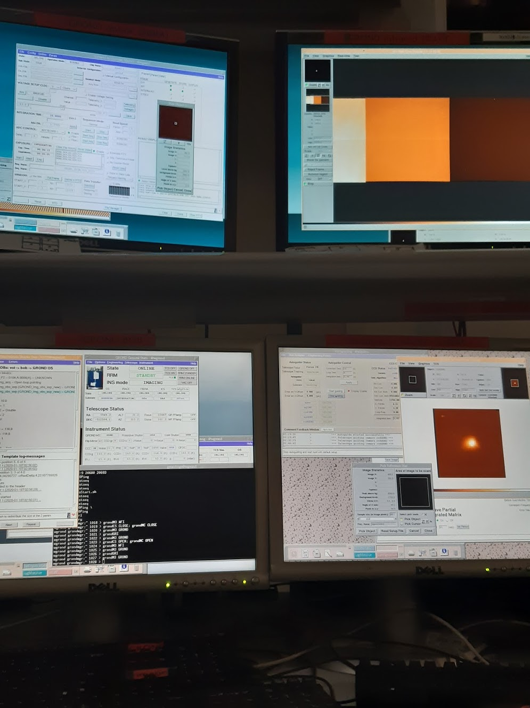{kind=link}
Una de las pantallas más importantes es la que monitorea el tiempo atmosférico. Nos indica cuando vienen las nubes y los niveles de humedad aumentan. Las gotitas de agua que se pueden formar por precipitación son muy malas para el espejo e instrumentos del telescopio. Tenemos que cerrar de emergencia cuando las lucesitas se tornan rojos.

Viviendo la pesadilla del astrónomo: nubes al atardecer.
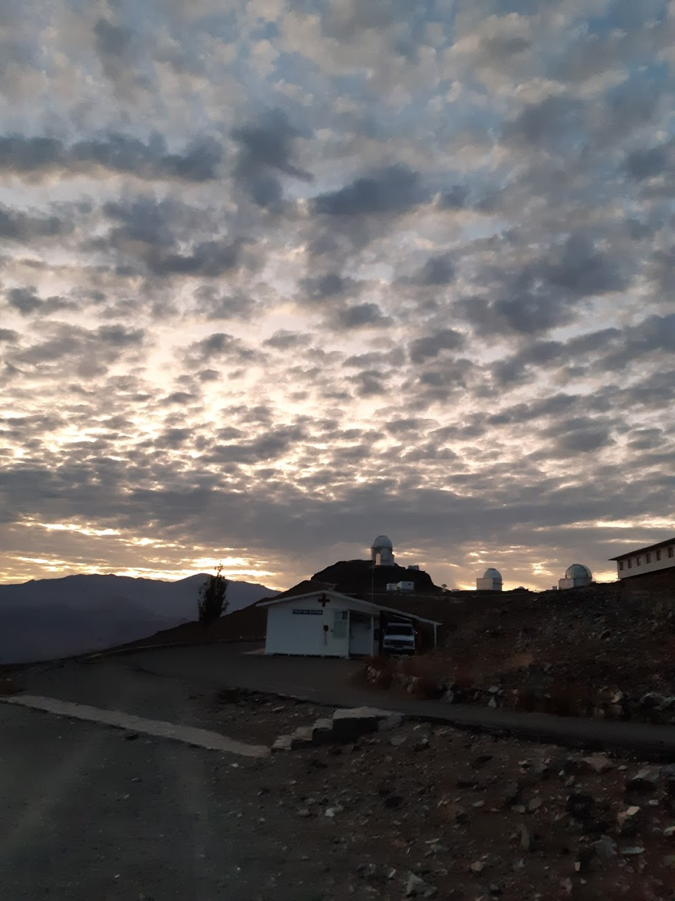{kind=link}
Tenemos visitantes muy amigables todo el día en el observatorio.

Las habitaciones de los astrónomos con Los Andes al fondo. Primera vez que vi las montañas tan peladas, en Colombia están cubiertas de vegetación verde.

La única flor silvestre del Observatorio. Esta área de Chile es muy árida y por lo tanto buena para los telescopios, pero no para la plantas.
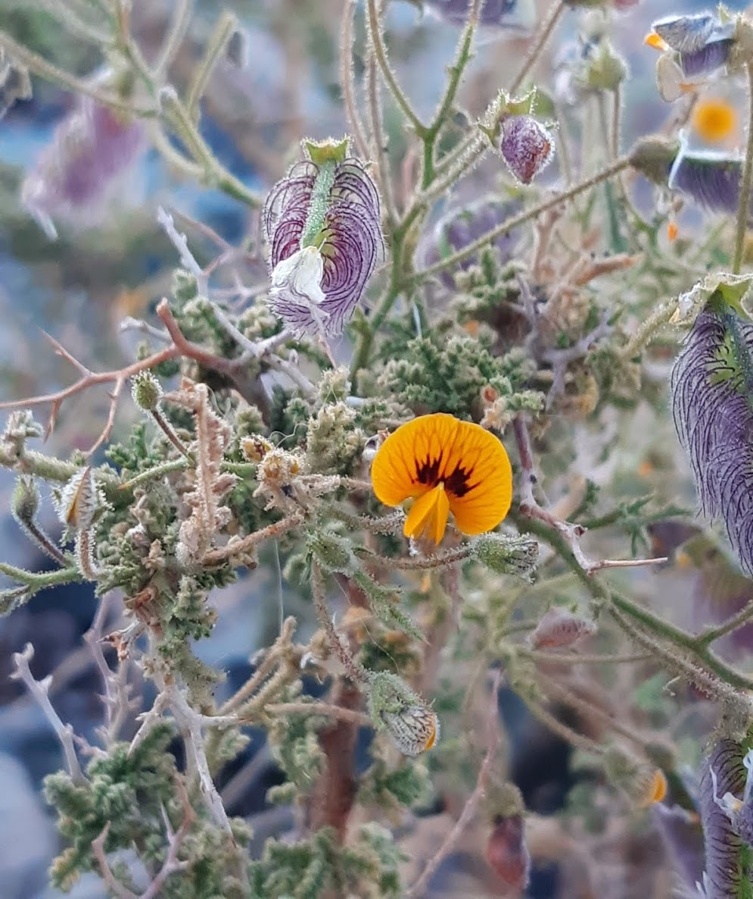{kind=link}
La Silla también tiene otros telescopios que no son parte de la ESO, como el Telescpio Suizo de 1.2 metros. El telescopio más coqueto que he visto.
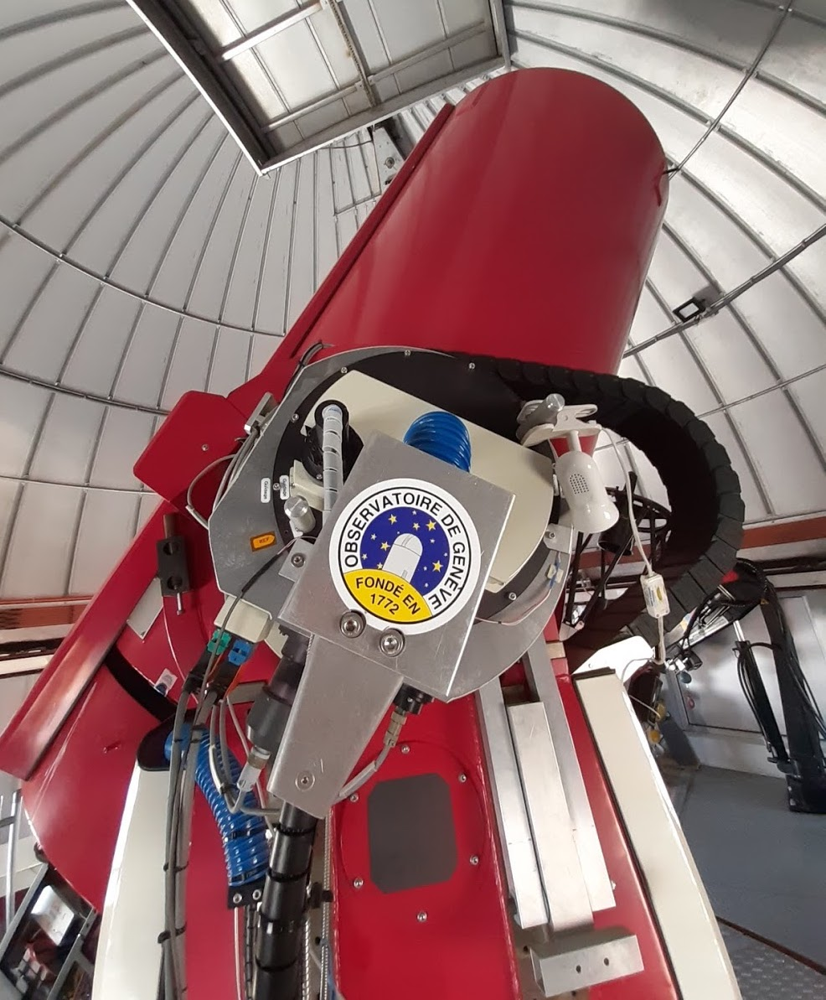{kind=link}
Observatorio Paranal
En Paranal están los 4 telescopios de 8.2 m Very Large Telescope VLT. ESO contrata astrónomos que se vuelven expertos en utilizar estos telescopios y realizan todas las observaciones científicas. Es muy raro que haya astrónomos visitantes fuera de la ESO, yo tuve suerte! Aplicar a observaciones.
Visitando Paranal! (el VLT está al fondo.)

El increíble VLT en la cumbre de la montaña. Los alrededores son bastante desérticos y áridos, sin una sola planta silvestre. Esto es lo más cercano que estaré a Marte.
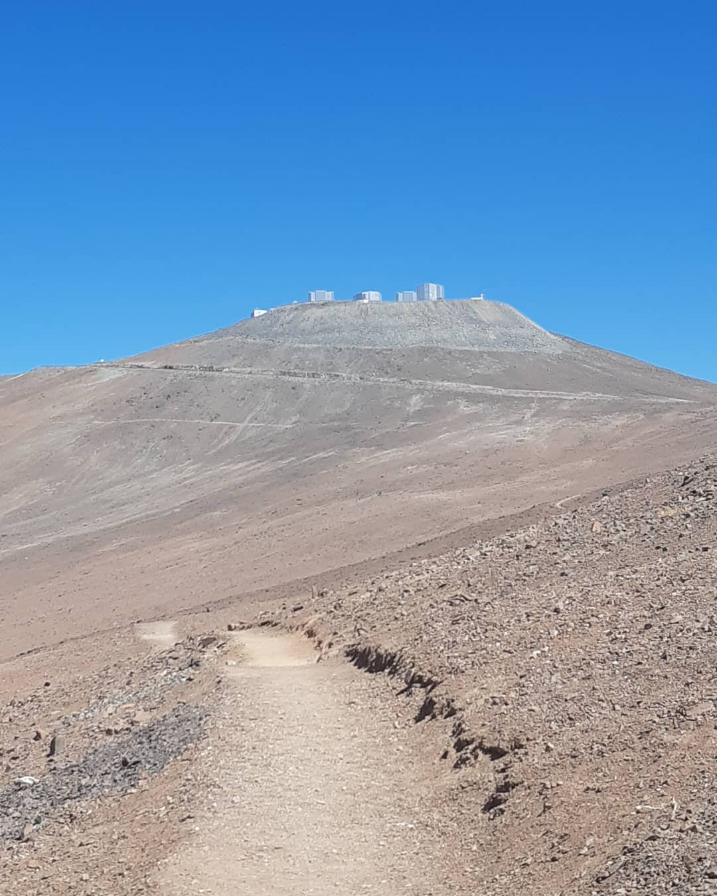{kind=link}
En el VLT, Unidad 1 'Antu' que significa Sol en Mapuche, los habitantes indígenas en esta área de Chile.

Los instrumentos de la Unidad 1 son KMOS, FORS2, y pronto MOONS.

Desde Paranal se puede ver la construcción del próximo European Extremely Large Telescope E-ELT, un telescopio de 40 metros!
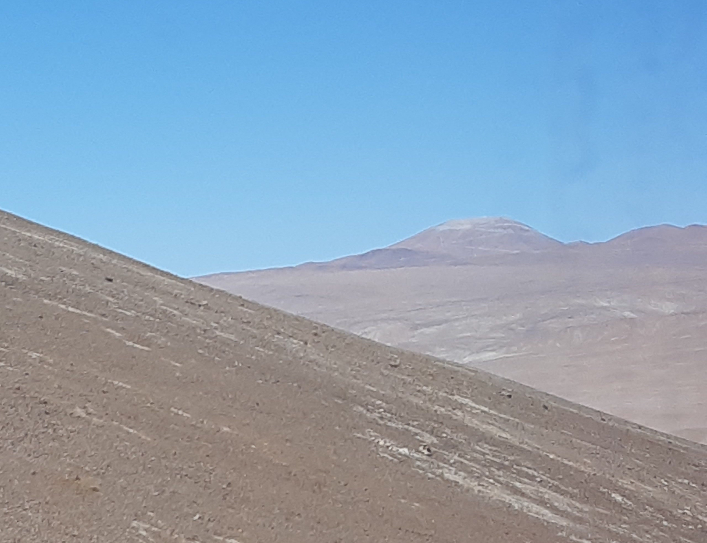{kind=link}
Esta es la entrada a las residencias donde los astrónomos comen y duermen. Se encuentra bajo la superficie lejos de los telescopios, se necesita un carro para poder subir a la cumbre.
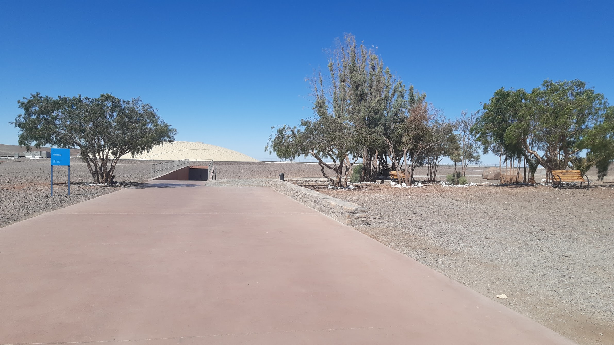{kind=link}
Al entrar a la residencia hay un cambio extremo. El ambiente es más húmedo y amigable para contrarrestrar las extremas condiciones áridas del desierto.

En la residencia se puede interactuar con varios astrónomos y empleados todos los días. Los que observan se pueden quedar hasta máximo 10 noches seguidas así que la ESO hace los posible por acomodarnos en el mejor ambiente posible.

El cielo nocturno es verdaderamente hermoso desde la cima del observatorio!

Observatorio Green Bank
Situado en la Zona Callada de West Virginia, EE.UU. Todas las señales de radio que pueden intervenir con nuestras observaciones son prohibidas. No podemos usar el microondas ni el celular, así que todas mis fotos se tomaron con una cámara Kodak desechable (disculpen resolución.) Aplicar a observaciones.
El Telescpio Green Bank (GBT) es uno de los más grandes radiotelescopios en el mundo con una antena de 100 metros de diámetro.
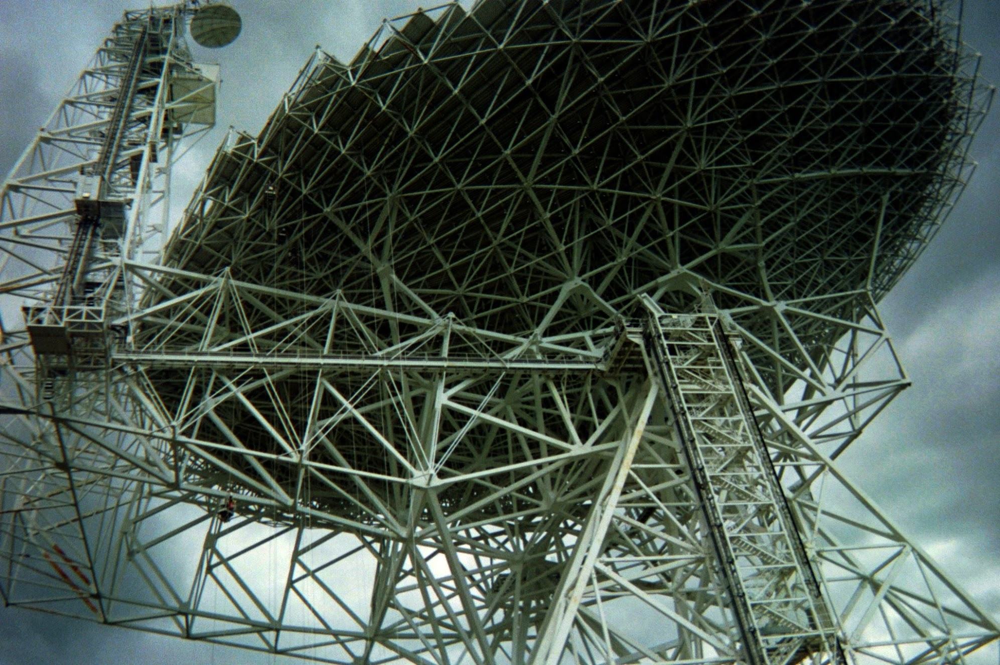{kind=link}
Me veo muy chiquita comparada al GBT!

Mis amigos del Internship de verano de NRAO-Charlottesville.

Observamos la Nebulosa del Cangrejo con la antena de 40 Pies. Fue la primera vez que observé de día y se sintió extraño pero más descansado .

Los alrededores del observatorio son hermosísimos! Hay muchas vegetación y animales silvestres. Teníamos que montar en bicicleta para ir de un telescopio a otro.

Una réplica del telescpio que Karl Jansky usó para observar el agujero negro supermasivo en el centro de nuestra galaxia. (Sí, esto es una antena).

El Centro de Visitantes del Observatorio Green Bank. Aquí podemos usar computadores con conexión a ethernet para trabajar con los datos de los telescopios... y comunicarnos con el mundo exterior.

Kitt Peak Observatory
The Observatory is part of the
National Optical Astronomy Observatory
NOAO. It is a city of telescopes in the
Kitt Peak mountains of Arizona as it hosts
over 20 telescopes of different sizes and for various astronomical objectives.
Telescopes info and calls for proposals.
I went to Kitt Peak for two nights to assist a grad student on his observing run.

Observing with Dr. Matthew Stevans to get some data for his PhD project!

We observed at the Mayall 4-m Telescope. with the NEWFIRM camera in the K-band to make a catalog of z ~ 4 galaxies.

A few telescopes at Kitt Peak as seen from the other side of the mountain.

This is the Mayall telescope!
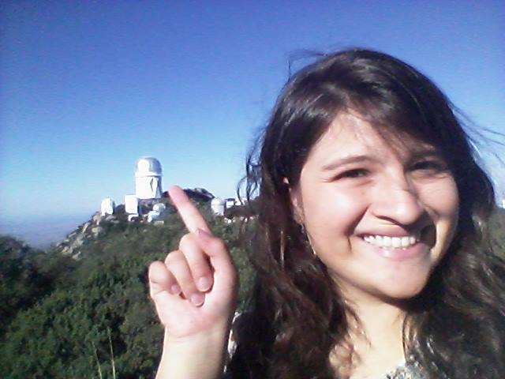{kind=link}
It is very easy to go up and visit the observatory.

An overview of the observatory and the many telescopes it has, taken at the visitor center.

The McMath-Pierce Solar Telescope. Truly an architectural masterpiece for a telescope dedicated solely to looking at the Sun. I visited when it was still functional for research (2016).

McDonald Observatory
Owned by The University of Texas at Austin and located in West Texas, this is the first observatory I ever visited. All UT astronomy undergradutes have the opportunity of going on observing nights either for research or outreach. There are five telescopes and calls for proposals are trimestral.
The 82" Otto Struve was the first telescope at McDonald built in the 1930's. The telescope and operations room are at the top of a five story building. All other floors are a big library with a lot of history of the observatory!

The Harlan J. Smith is a 107" telescope. It is one of my favorites to use and visit because it has the Tull Spectrograph. This coud´e spectrograph occupies a whole room that you can visit and see all the mirrors and instruments that help redirect the light from the observations to the detector.

The Hobby-Eberly HET 10-m telescope is certainly the one with most advanced technology. Unlike other telescopes, its mount is fixed at an angle and thus only observes 70% of the sky. It is used for the HETDEX project that I have been involved with in the past.
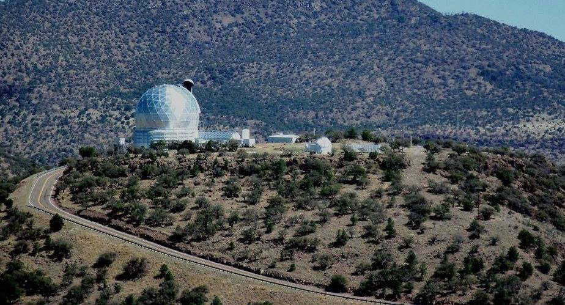{kind=link}
Me on top of the 82" observatory, with the 107" to the right and the HET on the back.

The Orion Nebula. UT students get to use the 30" telescope extensively for the Department's observational classes: Observational Methods in Astronomy and Freshman Research Initiative.

The 36" telescope is also widely used by undergradutes when we visit the observatory as part of the UT Astronomy Students Association ASA.

The Fank N. Bash Visitor Center. They have other telescopes for outreach but you can also book a guided tour to the telescopes on Mt. Locke!

Me helping at the Visitor Center where we talked to the general public and show them a few planets with telescopes.

The general lanscape of West Texas as seen from the observatory.
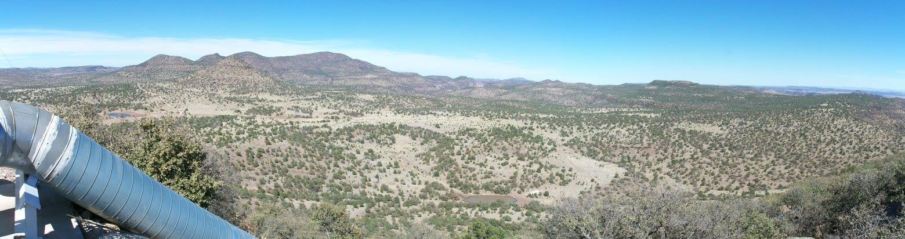{kind=link}
Telescopes in Colombia
The National Astronomical Observatory (OAN) was the first observatory built in America in 1803. Actually, the independence of the Viceroyalty of New Granada from the Spanish Crown was planned in this building and took place on July 20, 1810.
Since The Independence, the observatory was abandoned or worked as a prison. In 1891, Julio Garavito became Colombia's first Professor in Mathematics, and Director of the OAN. Here, he studied the Moon's movement and discovered a crater on its Dark Side. Sadly, the observatory was inactive for much of the XX Century until it became part of the National University of Colombia - Bogotá. (UNC)
The UNC left the OAN as a historical site and built a modern observatory but on its university grounds in 1952. The UNC was the first university to begin a Master's Degree in Astronomy, and recently inagurated in 2017 the first Ph.D. Astronomy Program of the country. Colombia is indeed an emerging country in Astronomy and we are working hard to give more opportunities to the new generations!
Historical Headquarters of the OAN

Academic Headquarters of the OAN with S. Vargas, me, C. Góez.
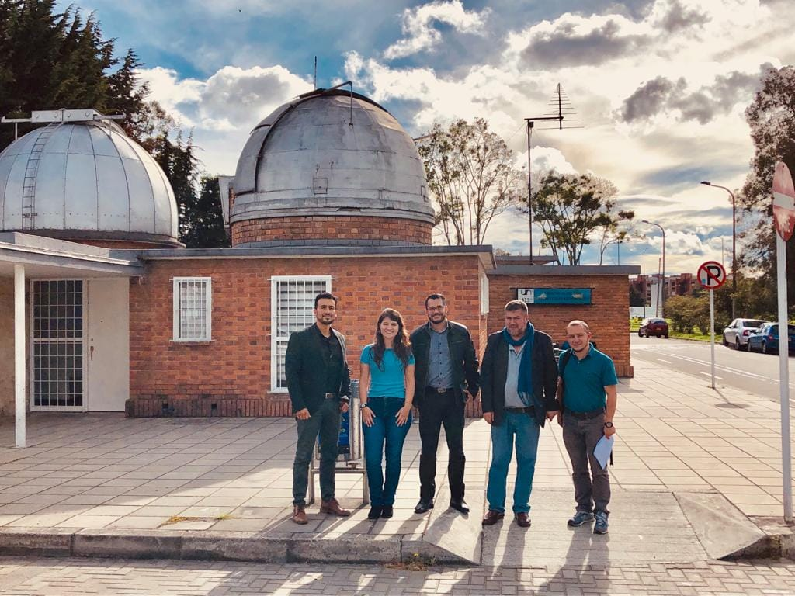{kind=link}
Tatacoa Desert Observatory in Huila.
Guaranteed best skies of Colombia.